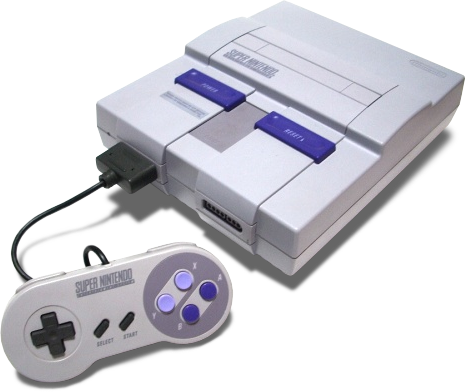
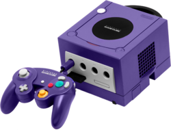
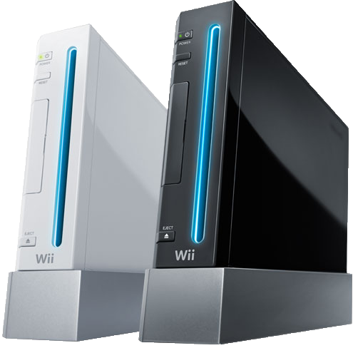
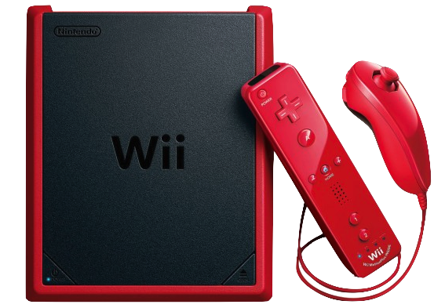
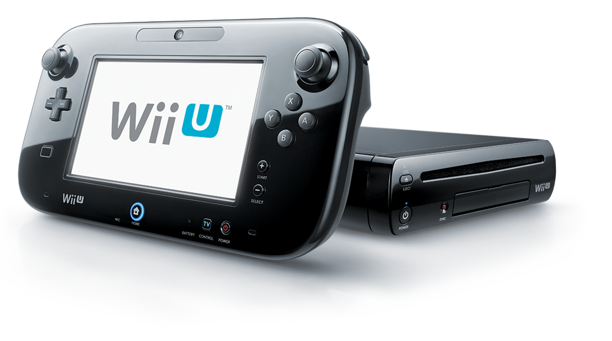
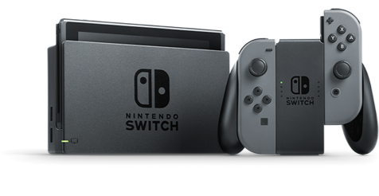

| Color TV Game series | |
|---|---|
 |
1977-1979 The Color TV Game series includes five different pieces of hardware, each one with a unique game. Color TV Game systems did not have interchangeable cartridges, so each console could only play a single title. |
| Nintendo Entertainment System | |
 |
1985 The Nintendo Entertainment System, an 8-bit system, was one of Nintendo's largest successes. Unlike the Color TV Games, the NES could play different titles that could be purchased at the store. |
| Super Nintendo Entertainment System | |
|  |
1991 The Super Nintendo Entertainment System featured enhanced graphics, a brand new controller, and more. It was the first 16-bit console by Nintendo. |
| Nintendo 64 |  |
1996 The Nintendo 64 featured greatly improved 3D graphics and a new controller that introduced the modern joystick. It was also the first home console to have four controller ports built into the system. |
| Gamecube |  | 2001 The GameCube featured enhanced graphics and a new controller. The games came on mini-discs. It was the first Nintendo home console to solely use a disc format for games. |
| Panasonic Q |  |
2001 The Panasonic Q is a hybrid version of the Nintendo GameCube with the ability to play DVDs, Audio CDs, MP3s and CDs as well as several other new features. It was only released in Japan. |
| Wii |  |
2006 The Wii featured motion controls, a new online system and slightly improved graphics. The graphical change wasn't nearly as dramatic as previous console transitions. The newer black, red, and blue models do not support Gamecube games. |
| Wii mini |  | 2012 The Wii Mini is a smaller version of the Wii console that lacks most Wii features like internet connectivity and Gamecube backwards compatibility. It was released in North America, and Europe. |
| Wii u |  | 2012 The Wii U features a new controller known as the Wii U GamePad, which has a 6.2" touch screen built into it. It also boasts new 1080p HD graphics (only on the TV screen). It has a NFC chip used to scan in amiibo. |
| Nintendo Switch |  | 2017 The Nintendo Switch is a new hybrid of home and portable gaming systems. It features a portable console with a screen that can be docked to display on larger displays. It features modular controllers that can attach to the device itself, a grip or in each of the user's hands. |